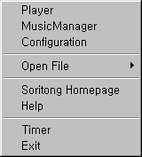
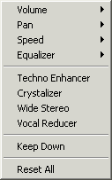

Song Control Menu - Pops up when is clicked.
- Gap : Set the gap between songs.
- Time Limit : Only plays selected amount of time for each song in the playlist.
- Repeat : Repeat none, single, all (playlist).
- Shuffle : Shuffle on/off.
| S O R I B A R | H E L P |
|
SoriBar, which is a bit smaller than the Window Taskbar,
resides on the opposite side of the taskbar. With SoriBar, you can adjust
major controls that Soritong offer without taking a whole lot of space.
You can change the SoriBar just like any other skins. By default, SoriBar
is not loaded. If you want to use SoriBar, Open Configuration/Visual
and select SoriBar from the drop-down menu. (Above is a screenshot of
"SoriBar Old".) |
|  |
System Menu - Pops up when is clicked.
|
|
Song Control Menu - Pops up when is clicked.
|
|  |
Sound Control Menu - Pops up when is clicked.
|
| Copyright (c) 1999 Sorinara. All rights reserved. |